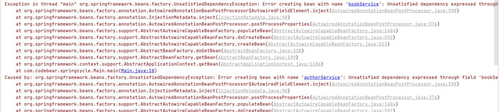
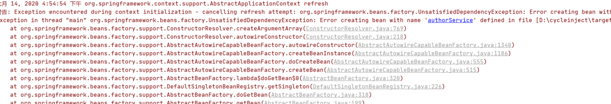
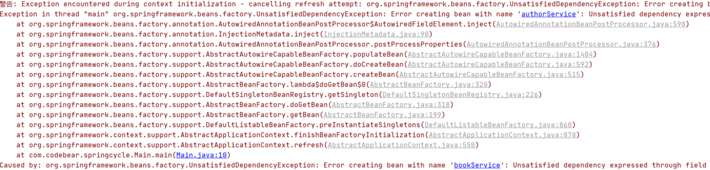

- AQS 万字图文全面解析.md.html
- Docker 镜像构建原理及源码分析.md.html
- ElasticSearch 小白从入门到精通.md.html
- JVM CPU Profiler技术原理及源码深度解析.md.html
- JVM 垃圾收集器.md.html
- JVM 面试的 30 个知识点.md.html
- Java IO 体系、线程模型大总结.md.html
- Java NIO浅析.md.html
- Java 面试题集锦（网络篇）.md.html
- Java-直接内存 DirectMemory 详解.md.html
- Java中9种常见的CMS GC问题分析与解决（上）.md.html
- Java中9种常见的CMS GC问题分析与解决（下）.md.html
- Java中的SPI.md.html
- Java中的ThreadLocal.md.html
- Java线程池实现原理及其在美团业务中的实践.md.html
- Java魔法类：Unsafe应用解析.md.html
- Kafka 源码阅读笔记.md.html
- Kafka、ActiveMQ、RabbitMQ、RocketMQ 区别以及高可用原理.md.html
- MySQL · 引擎特性 · InnoDB Buffer Pool.md.html
- MySQL · 引擎特性 · InnoDB IO子系统.md.html
- MySQL · 引擎特性 · InnoDB 事务系统.md.html
- MySQL · 引擎特性 · InnoDB 同步机制.md.html
- MySQL · 引擎特性 · InnoDB 数据页解析.md.html
- MySQL · 引擎特性 · InnoDB崩溃恢复.md.html
- MySQL · 引擎特性 · 临时表那些事儿.md.html
- MySQL 主从复制 半同步复制.md.html
- MySQL 主从复制 基于GTID复制.md.html
- MySQL 主从复制.md.html
- MySQL 事务日志(redo log和undo log).md.html
- MySQL 亿级别数据迁移实战代码分享.md.html
- MySQL 从一条数据说起-InnoDB行存储数据结构.md.html
- MySQL 地基基础：事务和锁的面纱.md.html
- MySQL 地基基础：数据字典.md.html
- MySQL 地基基础：数据库字符集.md.html
- MySQL 性能优化：碎片整理.md.html
- MySQL 故障诊断：一个 ALTER TALBE 执行了很久，你慌不慌？.md.html
- MySQL 故障诊断：如何在日志中轻松定位大事务.md.html
- MySQL 故障诊断：教你快速定位加锁的 SQL.md.html
- MySQL 日志详解.md.html
- MySQL 的半同步是什么？.md.html
- MySQL中的事务和MVCC.md.html
- MySQL事务_事务隔离级别详解.md.html
- MySQL优化：优化 select count().md.html
- MySQL共享锁、排他锁、悲观锁、乐观锁.md.html
- MySQL的MVCC（多版本并发控制）.md.html
- QingStor 对象存储架构设计及最佳实践.md.html
- RocketMQ 面试题集锦.md.html
- SnowFlake 雪花算法生成分布式 ID.md.html
- Spring Boot 2.x 结合 k8s 实现分布式微服务架构.md.html
- Spring Boot 教程：如何开发一个 starter.md.html
- Spring MVC 原理.md.html
- Spring MyBatis和Spring整合的奥秘.md.html
- Spring 帮助你更好的理解Spring循环依赖.md.html
- Spring 循环依赖及解决方式.md.html
- Spring中眼花缭乱的BeanDefinition.md.html
- Vert.x 基础入门.md.html
- eBay 的 Elasticsearch 性能调优实践.md.html
- 不可不说的Java“锁”事.md.html
- 互联网并发限流实战.md.html
- 从ReentrantLock的实现看AQS的原理及应用.md.html
- 从SpringCloud开始，聊微服务架构.md.html
- 全面了解 JDK 线程池实现原理.md.html
- 分布式一致性理论与算法.md.html
- 分布式一致性算法 Raft.md.html
- 分布式唯一 ID 解析.md.html
- 分布式链路追踪：集群管理设计.md.html
- 动态代理种类及原理，你知道多少？.md.html
- 响应式架构与 RxJava 在有赞零售的实践.md.html
- 大数据算法——布隆过滤器.md.html
- 如何优雅地记录操作日志？.md.html
- 如何设计一个亿级消息量的 IM 系统.md.html
- 异步网络模型.md.html
- 当我们在讨论CQRS时，我们在讨论些神马？.md.html
- 彻底理解 MySQL 的索引机制.md.html
- 最全的 116 道 Redis 面试题解答.md.html
- 有赞权限系统(SAM).md.html
- 有赞零售中台建设方法的探索与实践.md.html
- 服务注册与发现原理剖析（Eureka、Zookeeper、Nacos）.md.html
- 深入浅出Cache.md.html
- 深入理解 MySQL 底层实现.md.html
- 漫画讲解 git rebase VS git merge.md.html
- 生成浏览器唯一稳定 ID 的探索.md.html
- 缓存 如何保证缓存与数据库的双写一致性？.md.html
- 网易严选怎么做全链路监控的？.md.html
- 美团万亿级 KV 存储架构与实践.md.html
- 美团点评Kubernetes集群管理实践.md.html
- 美团百亿规模API网关服务Shepherd的设计与实现.md.html
- 解读《阿里巴巴 Java 开发手册》背后的思考.md.html
- 认识 MySQL 和 Redis 的数据一致性问题.md.html
- 进阶：Dockerfile 高阶使用指南及镜像优化.md.html
- 铁总在用的高性能分布式缓存计算框架 Geode.md.html
- 阿里云PolarDB及其共享存储PolarFS技术实现分析（上）.md.html
- 阿里云PolarDB及其共享存储PolarFS技术实现分析（下）.md.html
- 面试最常被问的 Java 后端题.md.html
- 领域驱动设计在互联网业务开发中的实践.md.html
- 领域驱动设计的菱形对称架构.md.html
- 高效构建 Docker 镜像的最佳实践.md.html
Spring 帮助你更好的理解Spring循环依赖
网上关于Spring循环依赖的博客太多了，有很多都分析的很深入，写的很用心，甚至还画了时序图、流程图帮助读者理解，我看了后，感觉自己是懂了，但是闭上眼睛，总觉得还没有完全理解，总觉得还有一两个坎过不去，对我这种有点笨的人来说，真的好难。当时，我就在想，如果哪一天，我理解了Spring循环依赖，一定要用自己的方式写篇博客，帮助大家更好的理解，等我理解后，一直在构思，到底怎么应该写，才能更通俗易懂，就在前几天，我想通了，这么写应该更通俗易懂。在写本篇博客之前，我翻阅了好多关于Spring循环依赖的博客，网上应该还没有像我这样讲解的，现在就让我们开始把。
什么是循环依赖
一言以蔽之：两者相互依赖。
在开发中，可能经常出现这种情况，只是我们平时并没有注意到原来我们写的两个类、甚至多个类相互依赖了，为什么注意不到呢？当然是因为没有报错，而且一点问题都木有，如果报错了，或者产生了问题，我们还会注意不到吗？这一切都是Spring的功劳，它在后面默默的为我们解决了循环依赖的问题。
如下所示：
@Configuration
@ComponentScan
public class AppConfig {
}
@Service
public class AuthorService {
@Autowired
BookService bookService;
}
@Service
public class BookService {
@Autowired
AuthorService authorService;
}
public class Main {
public static void main(String[] args) {
ApplicationContext annotationConfigApplicationContext = new AnnotationConfigApplicationContext(AppConfig.class);
BookService bookService = (BookService) annotationConfigApplicationContext.getBean("bookService");
System.out.println(bookService.authorService);
AuthorService authorService = (AuthorService) annotationConfigApplicationContext.getBean("authorService");
System.out.println(authorService.bookService);
}
}
运行结果：
[email protected]
[email protected]
可以看到BookService中需要AuthorService，AuthorService中需要BookService，类似于这样的就叫循环依赖，但是神奇的是竟然一点问题没有。
当然有些小伙伴可能get不到它的神奇之处，至于它的神奇之处在哪里，我们放到后面再说。
任何循环依赖，Spring都能解决吗
不行。
如果是原型 bean的循环依赖，Spring无法解决：
@Service
@Scope(BeanDefinition.SCOPE_PROTOTYPE)
public class BookService {
@Autowired
AuthorService authorService;
}
@Service
@Scope(BeanDefinition.SCOPE_PROTOTYPE)
public class AuthorService {
@Autowired
BookService bookService;
}
启动后，令人恐惧的红色字体在控制台出现了： 
如果是构造参数注入的循环依赖，Spring无法解决：
@Service
public class AuthorService {
BookService bookService;
public AuthorService(BookService bookService) {
this.bookService = bookService;
}
}
@Service
public class BookService {
AuthorService authorService;
public BookService(AuthorService authorService) {
this.authorService = authorService;
}
}
还是讨厌的红色字体： 
循环依赖可以关闭吗
可以，Spring提供了这个功能，我们需要这么写：
public class Main {
public static void main(String[] args) {
AnnotationConfigApplicationContext applicationContext = new AnnotationConfigApplicationContext();
applicationContext.setAllowCircularReferences(false);
applicationContext.register(AppConfig.class);
applicationContext.refresh();
}
}
再次运行，就报错了： 
需要注意的是，我们不能这么写：
AnnotationConfigApplicationContext applicationContext = new AnnotationConfigApplicationContext(AppConfig.class);
applicationContext.setAllowCircularReferences(false);
如果你这么写，程序执行完第一行代码，整个Spring容器已经初始化完成了，你再设置不允许循环依赖，也于事无补了。
可以循环依赖的神奇之处在哪
有很多小伙伴可能并不觉得可以循环依赖有多么神奇，那是因为不知道矛盾点在哪，接下来就来说说这个问题： 当beanA，beanB循环依赖：
- 创建beanA，发现依赖beanB；
- 创建beanB，发现依赖beanA；
- 创建beanA，发现依赖beanB；
- 创建beanB，发现依赖beanA。 ... 好了，死循环了。
循环依赖的矛盾点就在于要创建beanA，它需要beanB，而创建beanB，又需要beanA，然后两个bean都创建不出来。
如何简单的解决循环依赖
如果你曾经看过Spring解决循环依赖的博客，应该知道它其中有好几个Map，一个Map放的是最完整的对象，称为singletonObjects，一个Map放的是提前暴露出来的对象，称为earlySingletonObjects。
在这里，先要解释下这两个东西：
- singletonObjects：单例池，其中存放的是经历了Spring完整生命周期的bean，这里面的bean的依赖都已经填充完毕了。
- earlySingletonObjects：提前暴露出来的对象的map，其中存放的是刚刚创建出来的对象，没有经历Spring完整生命周期的bean，这里面的bean的依赖还未填充完毕。
我们可以这么做：
- 当我们创建完beanA，就把自己放到earlySingletonObjects，发现自己需要beanB，然后就去屁颠屁颠创建beanB；
- 当我们创建完beanB，就把自己放到earlySingletonObjects，发现自己需要beanA，然后就去屁颠屁颠创建beanA；
- 创建beanA前，先去earlySingletonObjects看一下，发现自己已经被创建出来了，把自己返回出去；
- beanB拿到了beanA，beanB创建完毕，把自己放入singletonObjects；
- beanA可以去singletonObjects拿到beanB了，beanA也创建完毕，把自己放到singletonObjects。 整个过程结束。
下面让我们来实现这个功能： 首先，自定义一个注解，字段上打上这个注解的，说明需要被Autowired：
@Retention(RetentionPolicy.RUNTIME)
public @interface CodeBearAutowired {
}
再创建两个循环依赖的类：
public class OrderService {
@CodeBearAutowired
public UserService userService;
}
public class UserService {
@CodeBearAutowired
public OrderService orderService;
}
然后就是核心，创建对象，填充属性，并解决Spring循环依赖的问题：
public class Cycle {
// 单例池，里面放的是完整的bean，已完成填充属性
private final Map<String, Object> singletonObjects = new ConcurrentHashMap<>();
// 存放的是提前暴露出来的bean，没有经历过spring完整的生命周期，没有填充属性
private final Map<String, Object> earlySingletonObjects = new HashMap<>();
// 在Spring中，这个map存放的是beanNam和beanDefinition的映射关系
static Map<String, Class<?>> map = new HashMap<>();
static {
map.put("orderService", OrderService.class);
map.put("userService", UserService.class);
}
// 如果先调用init方法，就是预加载，如果直接调用getBean就是懒加载，两者的循环依赖问题都解决了
public void init() {
for (Map.Entry<String, Class<?>> stringClassEntry : map.entrySet()) {
createBean(stringClassEntry.getKey());
}
}
public Object getBean(String beanName) {
// 尝试从singletonObjects中取，
Object singletonObject = this.singletonObjects.get(beanName);
if (singletonObject != null) {
return singletonObject;
}
// 尝试从earlySingletonObjects取
singletonObject = this.earlySingletonObjects.get(beanName);
if (singletonObject != null) {
return singletonObject;
}
return createBean(beanName);
}
private Object createBean(String beanName) {
Object singletonObject;
try {
// 创建对象
singletonObject = map.get(beanName).getConstructor().newInstance();
// 把没有完成填充属性的半成品 bean 放入earlySingletonObjects
earlySingletonObjects.put(beanName, singletonObject);
// 填充属性
populateBean(singletonObject);
// bean创建成功，放入singletonObjects
this.singletonObjects.put(beanName, singletonObject);
return singletonObject;
} catch (Exception ignore) {
}
return null;
}
private void populateBean(Object object) {
Field[] fields = object.getClass().getDeclaredFields();
for (Field field : fields) {
if (field.getAnnotation(CodeBearAutowired.class) != null) {
Object value = getBean(field.getName());
try {
field.setAccessible(true);
field.set(object, value);
} catch (IllegalAccessException ignored) {
}
}
}
}
}
预加载调用：
public class Main {
public static void main(String[] args) {
Cycle cycle = new Cycle();
cycle.init();
UserService userService = (UserService) cycle.getBean("userService");
OrderService orderService = (OrderService) cycle.getBean("orderService");
System.out.println(userService.orderService);
System.out.println(orderService.userService);
}
}
运行结果：
[email protected]
[email protected]
懒加载调用：
public class Main {
public static void main(String[] args) {
Cycle cycle = new Cycle();
UserService userService = (UserService) cycle.getBean("userService");
OrderService orderService = (OrderService) cycle.getBean("orderService");
System.out.println(userService.orderService);
System.out.println(orderService.userService);
}
}
运行结果：
[email protected]
[email protected]
为什么无法解决原型、构造方法注入的循环依赖
在上面，我们自己手写了解决循环依赖的代码，可以看到，核心是利用一个map，来解决这个问题的，这个map就相当于缓存。
为什么可以这么做，因为我们的bean是单例的，而且是字段注入（setter注入）的，单例意味着只需要创建一次对象，后面就可以从缓存中取出来，字段注入，意味着我们无需调用构造方法进行注入。
- 如果是原型bean，那么就意味着每次都要去创建对象，无法利用缓存；
- 如果是构造方法注入，那么就意味着需要调用构造方法注入，也无法利用缓存。
需要aop怎么办？
我们上面的方案看起来很美好，但是还有一个问题，如果我们的bean创建出来，还要做一点加工，怎么办？也许，你没有理解这句话的意思，再说的明白点，如果beanA和【beanB的代理对象】循环依赖，或者【beanA的代理对象】和beanB循环依赖，再或者【beanA的代理对象】和【beanB的代理对象】循环依赖，怎么办？
这里说的创建代理对象仅仅是“加工”的其中一种可能。
遇到这种情况，我们总不能把创建完的对象直接扔到缓存把？我们这么做的话，如果【beanA的代理对象】和【beanB的代理对象】循环依赖，我们最终获取的beanA中的beanB还是beanB，并非是beanB的代理对象。
聪明的你，一定在想，这还不简单吗： 我们创建完对象后，判断这个对象是否需要代理，如果需要代理，创建代理对象，然后把代理对象放到earlySingletonObjects不就OJ8K了？ 就像这样：
private Object createBean(String beanName) {
Object singletonObject;
try {
// 创建对象
singletonObject = map.get(beanName).getConstructor().newInstance();
// 创建bean的代理对象
/**
* if( 需要代理){
* singletonObject=创建代理对象;
*
* }
*/
// 把没有完成填充属性的半成品 bean 放入earlySingletonObjects
earlySingletonObjects.put(beanName, singletonObject);
// 填充属性
populateBean(singletonObject);
// bean创建成功，放入singletonObjects
this.singletonObjects.put(beanName, singletonObject);
return singletonObject;
} catch (Exception ignore) {
}
return null;
}
这确实可以，但是，这违反了Spring的初衷，Spring的初衷是希望在bean生命周期的最后几步才去aop，如果像上面说的这么做，就意味着一旦创建完对象，Spring就会去aop了，这就违反了Spring的初衷，所以Spring并没有这么做。
但是如果真的出现了aop bean循环依赖，就没办法了，只能先去aop，但是如果没有出现循环依赖，Spring并不希望在这里就进行aop，所以Spring引入了Map<String, ObjectFactory<?>>，ObjectFactory是一个函数式接口，可以理解为工厂方法，当创建完对象后，把【获得这个对象的工厂方法】放入这个map，等真的发生循环依赖，就去执行这个【获得这个对象的工厂方法】，获取加工完成的对象。
下面直接放出代码：
public class Cycle {
// 单例池，里面放的是完整的bean，已完成填充属性
private final Map<String, Object> singletonObjects = new ConcurrentHashMap<>();
// 存放的是 加工bean的工厂方法
private final Map<String, ObjectFactory<?>> singletonFactories = new HashMap<>();
// 存放的是提前暴露出来的bean，没有经历过spring完整的生命周期，没有填充属性
private final Map<String, Object> earlySingletonObjects = new HashMap<>();
private final Set<String> singletonsCurrentlyInCreation = new HashSet<>();
static Map<String, Class<?>> map = new HashMap<>();
static {
map.put("orderService", OrderService.class);
map.put("userService", UserService.class);
}
public void init() {
for (Map.Entry<String, Class<?>> stringClassEntry : map.entrySet()) {
createBean(stringClassEntry.getKey());
}
}
private Object createBean(String beanName) {
Object instance = null;
try {
instance = map.get(beanName).getConstructor().newInstance();
} catch (Exception ex) {
}
Object finalInstance = instance;
this.singletonFactories.put(beanName, () -> {
// 创建代理对象
return finalInstance;
});
populateBean(instance);
this.singletonObjects.put(beanName, instance);
return instance;
}
public Object getBean(String beanName) {
// 尝试从singletonObjects中取，
Object singletonObject = this.singletonObjects.get(beanName);
if (singletonObject != null) {
return singletonObject;
}
// 尝试从earlySingletonObjects取
singletonObject = this.earlySingletonObjects.get(beanName);
if (singletonObject != null) {
return singletonObject;
}
// 尝试从singletonFactories取出工厂方法
ObjectFactory<?> objectFactory = this.singletonFactories.get(beanName);
if (objectFactory != null) {
singletonObject = objectFactory.getObject();
this.earlySingletonObjects.put(beanName, singletonObject);
return singletonObject;
}
return createBean(beanName);
}
private void populateBean(Object object) {
Field[] fields = object.getClass().getDeclaredFields();
for (Field field : fields) {
if (field.getAnnotation(CodeBearAutowired.class) != null) {
Object value = getBean(field.getName());
try {
field.setAccessible(true);
field.set(object, value);
} catch (IllegalAccessException ignored) {
}
}
}
}
}
调用方法：
public static void main(String[] args) {
Cycle cycle = new Cycle();
cycle.init();
System.out.println(((UserService) cycle.getBean("userService")).orderService);
System.out.println(((OrderService) cycle.getBean("orderService")).userService);
}
运行结果：
[email protected]
[email protected]
二级缓存能不能解决循环依赖，三级循环到底有什么用？
我的观点可能和网上的主流观点有很大的出入，至于我的观点是对是错，请各位自行判断。
二级缓存可以解决循环依赖，哪怕aop bean循环依赖，上面我们已经提到了，我们可以创建完对象，直接创建代理对象，把代理对象放入二级缓存，这样我们从二级缓存获得的一定是aop bean，并非是bean本身。
三级缓存有什么用？网上的主流观点是为了解决循环依赖，还有就是为了效率，为了解决循环依赖，我们上面已经讨论过了，我的观点是二级缓存已经可以解决循环依赖了，下面就让我们想想，和效率是否有关系？
我的观点是没有关系，理由如下： 我们把【获得对象的工厂方法】放入了map
- 如果没有循环依赖，这个map根本没有用到，和效率没有关系；
- 如果是普通bean循环依赖，三级缓存直接返回了bean，和效率还是没有关系；
- 如果是aop bean循环依赖，如果没有三级缓存，直接创建代理对象，放入二级缓存，如果有三级缓存，还是需要创建代理对象，只是两者的时机不同，和效率还是没有关系。
有了这篇博客的基础，当你再看其他关于Spring循环依赖的博客，应该会轻松的多，因为我们毕竟自己解决了循环依赖，Spring的循环依赖只是在我们之上做了进一步的封装与改进。